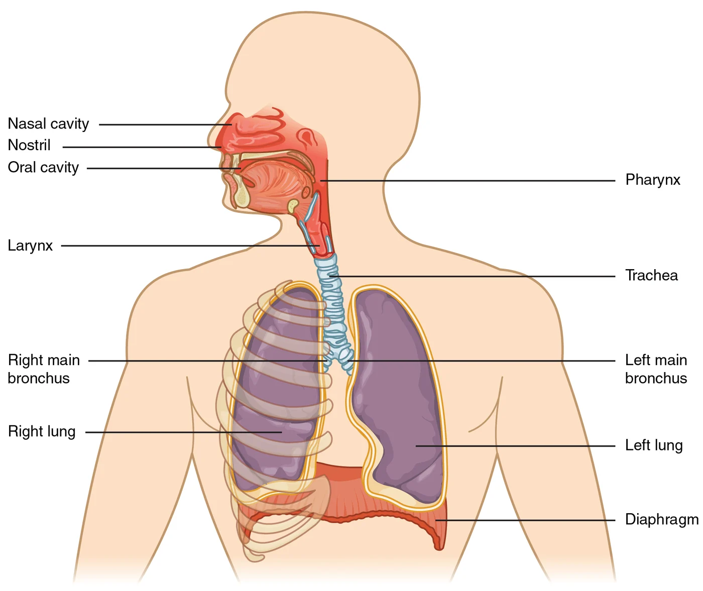
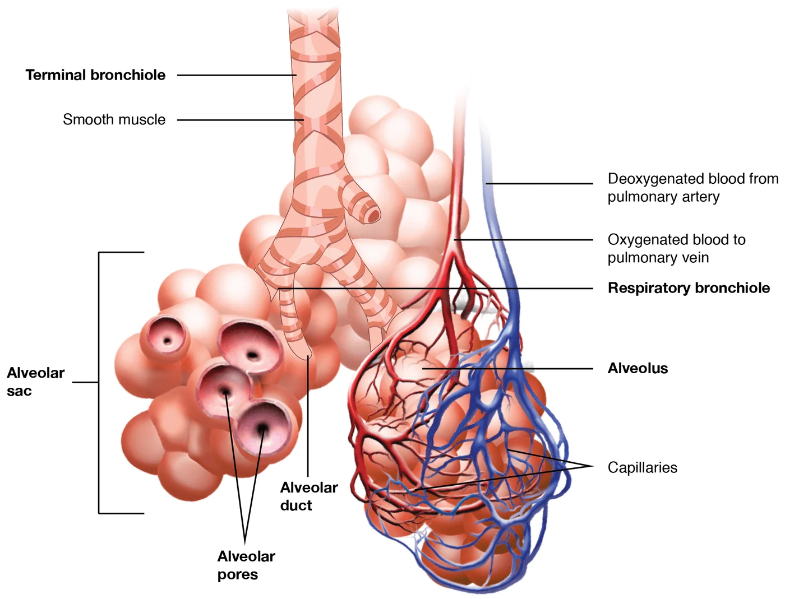
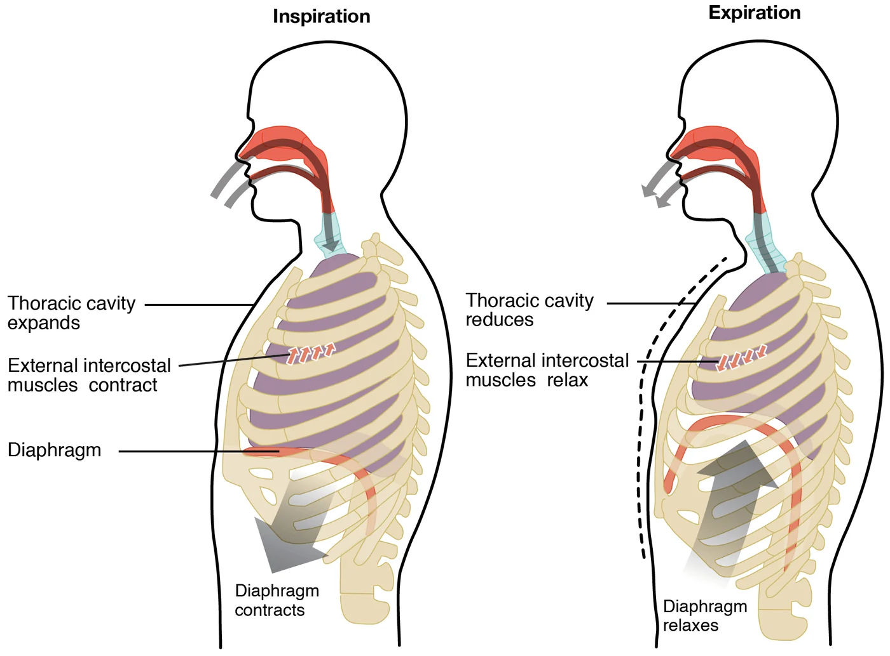

The Respiratory System
TEAS objective S.1.2 · Human Anatomy & Physiology
What the TEAS expects: you can trace the path of air, explain how breathing moves air in and out, and explain how oxygen and carbon dioxide are exchanged.
1. The path of air
Air moves through a branching set of tubes that gets narrower and narrower:
- Nose (nasal cavity): air is warmed, moistened and filtered by hairs and sticky mucus. (Air can also enter through the mouth, but the mouth does not filter it well.)
- Pharynx (throat): shared with the digestive system.
- Larynx (voice box): holds the vocal cords. The epiglottis, a flap at its top, covers the larynx when you swallow so food goes down the esophagus instead.
- Trachea (windpipe): held open by C-shaped rings of cartilage.
- Bronchi: the trachea splits into right and left main bronchi, one for each lung.
- Bronchioles: smaller and smaller branches with no cartilage.
- Alveoli: tiny air sacs where gas exchange happens.
The right lung has 3 lobes; the left has 2 (making room for the heart). Each lung is wrapped in a two-layer pleura with a thin film of fluid between the layers. Cilia and mucus lining the airways trap particles and sweep them up toward the throat.
Everything from the nose to the terminal bronchioles is the conducting zone: it only moves air. The respiratory bronchioles, alveolar ducts and alveoli are the respiratory zone, where gas exchange happens.

Tap or click the figure to open it full size.
Check 1: Food goes down the esophagus; air goes down the trachea. Which structure keeps them apart during a swallow? Answer at the bottom of the page.
2. Gas exchange happens by diffusion
Each alveolus is wrapped in capillaries. The alveolar wall and the capillary wall are both extremely thin, so gases cross easily.
- Oxygen moves from the alveolar air (higher oxygen) into the blood (lower oxygen).
- Carbon dioxide moves from the blood (higher CO₂) into the alveolar air (lower CO₂), and you breathe it out.
- In the body's tissues the directions reverse: oxygen diffuses from the blood into the cells (which use it up), and CO₂ diffuses from the cells into the blood. Most CO₂ travels in the blood as bicarbonate.
Why it works: each gas moves on its own from where its concentration (partial pressure) is higher to where it is lower. No pumping is needed. In the blood, most oxygen rides on hemoglobin inside red blood cells.
Surfactant, made by cells in the alveoli, lowers surface tension so the alveoli don't collapse when you exhale.

Tap or click the figure to open it full size.
Check 2: In the tissues of your leg muscles, which way does oxygen diffuse, and why? Answer at the bottom.
3. How breathing moves air
Air flows from higher pressure to lower pressure. Breathing works by changing the size of the chest, which changes the pressure inside the lungs.
Inhalation (inspiration) is active:
- The diaphragm contracts and flattens (moves down), and the external intercostal muscles lift the ribs.
- The chest cavity gets bigger, so pressure in the lungs drops below the air pressure outside.
- Air flows in.
Exhalation (expiration) at rest is passive:
- The diaphragm and intercostals relax; the elastic lungs recoil.
- The chest gets smaller, so pressure in the lungs rises above outside pressure.
- Air flows out.
During hard breathing (exercise, coughing), exhalation becomes active: the internal intercostals and abdominal muscles contract to push air out.
Bigger volume, lower pressure; smaller volume, higher pressure. That inverse relationship (Boyle's law) is the whole mechanism.

Tap or click the figure to open it full size.
4. What controls breathing
Breathing is controlled by respiratory centers in the brainstem (medulla oblongata and pons). The strongest everyday trigger to breathe is rising carbon dioxide in the blood (which also makes the blood more acidic), not falling oxygen. That is why holding your breath becomes urgent: CO₂ builds up.
Check 3: You hold your breath. What change in your blood makes the urge to breathe so strong? Answer at the bottom.
Common traps
- Putting the trachea before the larynx. The larynx sits on top of the trachea, so air passes through it first.
- Thinking exhalation at rest is muscular. Normal exhalation is passive recoil.
- Saying the diaphragm moves up during inhalation. It contracts, flattens and moves down.
- Thinking low oxygen is the main breathing trigger. In healthy people it is rising CO₂.
- Thinking gases are pumped. Gas exchange is passive diffusion.
Learn it properly
- Airway structures: OpenStax Anatomy and Physiology 2e, Section 22.1 Organs and Structures of the Respiratory System: OpenStax (opens in a new tab)
- Breathing mechanics: Section 22.3 The Process of Breathing: OpenStax (opens in a new tab)
- Gas exchange: Section 22.4 Gas Exchange: OpenStax (opens in a new tab)
Check answers
- The epiglottis. It folds down over the opening of the larynx during swallowing.
- From the blood into the muscle cells. The cells use oxygen constantly, so their oxygen level is lower than the blood's; oxygen diffuses down that gradient.
- Rising carbon dioxide (and the acidity it causes). The brainstem responds by driving you to breathe.
ESCC TEAS Prep · Original study material written for Eastern Shore Community College. Figures from OpenStax, Anatomy and Physiology 2e, licensed CC BY 4.0.